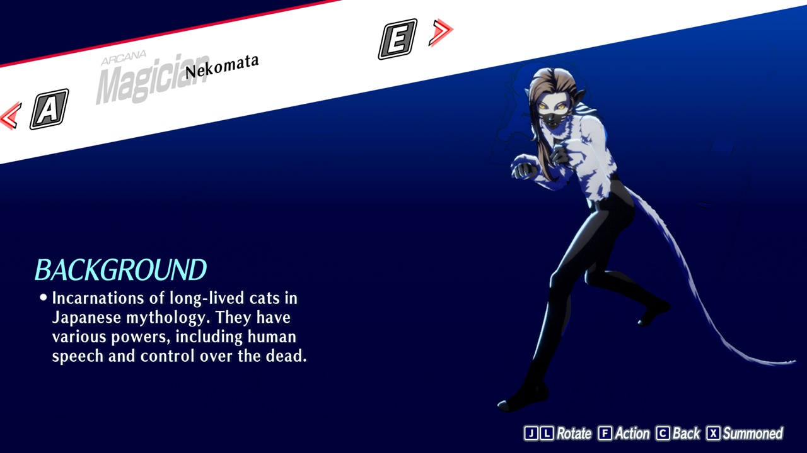
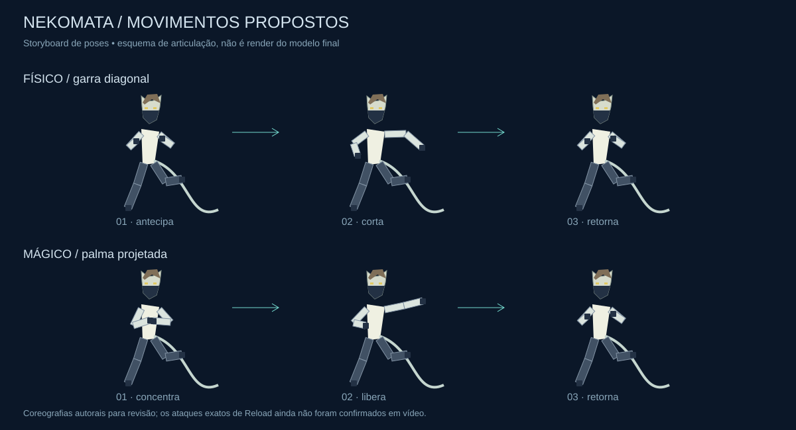

Estudo para validar forma, rosto e animações. A nova Nekomata ainda não foi modelada nem integrada ao mod.

Referência principal: captura de Reload publicada pela Samurai Gamers. Imagem de referência; não é nosso modelo.
O asset atual precisa ser reconstruído
17
cuboides atuais
Focinho grande e cauda reta; pouca definição da silhueta.8
ossos atuais
Sem articulação independente de cotovelos e joelhos.64 × 8
atlas atual
Autoria nova em Box UV, textura própria e grade uniforme ampliada.Direção de forma
| Parte | Decisão para a próxima modelagem |
|---|
| Cabeça | Crânio e mandíbula com poucos cuboides inclinados; feições em relevo raso. Conferir frente, perfil e três quartos antes do corpo detalhado. |
| Cabelo e pelo | Massa contínua e mechas longas; recortes maiores no pelo. Evitar placas soltas e espinhos finos acumulados. |
| Corpo e mãos | Tronco alongado, articulações encostadas, mãos felinas pequenas e polegares separados. O pelo acompanha os ombros. |
| Cauda | Cadeia curva afilada ligada à pelve. Uma cauda longa é visível nesta referência; conferir atrás antes de decidir uma bifurcação. |
| Escala | Comparar proporções e limites animados no inspect. Reservar espaço para cauda e mãos sem diminuir excessivamente a Persona. |
Idle + dois ataques próprios
Idle inspirado na postura do compêndio, com respiração e cauda suave. Físico em garra diagonal; mágico com concentração e projeção de palma. As coreografias dos ataques abaixo são propostas para revisão, ainda sem confirmação quadro a quadro do jogo.

Plano dos três clipes · Auditoria completa, rig, critérios e fontes
Próxima revisão do modelo real
Frente, perfil, três quartos e detalhe do rosto; depois GIFs de corpo inteiro do idle, físico e mágico. Revisar olhos, continuidade dos membros, cauda, cabelo, mãos e retorno ao idle. As prévias deverão usar a geometria e a textura efetivamente entregues.
Convenções técnicas do Cobblemon · Padrão local de modelagem